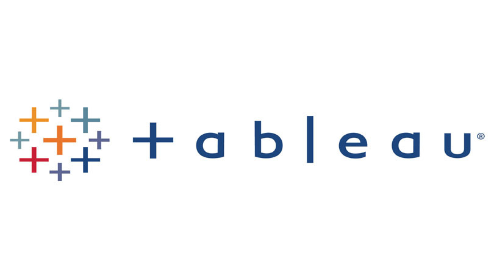
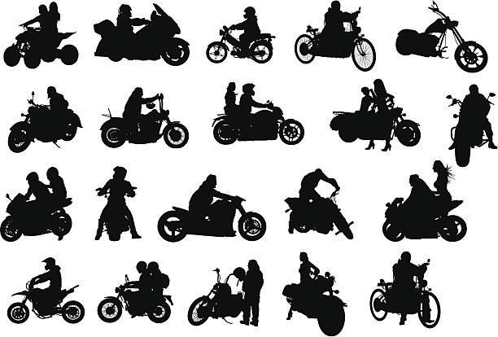

Ashish is a graduate student at the University of Michigan Dearborn pursuing a master’s in engineering management. He is a product and data enthusiast experienced in working with cross-functional teams in market research, product sales, consulting, business intelligence, product development, and customer service. He is interested in leading projects that use modern technologies and ideas to bring about significant societal changes.
Coffee Shop
Data Modelling
This project is all about data modelling using SQL and solving business problems of coffee shop data.
Yelp data analysis
using SQL

This data analysis project on yelp dataset helps consumers in Ohio (OH) state select shops based on the different categories like shopping, food, Hotels & travel.
US Dollar Vs INR
Excel Project
This Excel model help people compare indian rupee conversion to US Dollar on a daily basis.

Tableau Dasboards for projects on COVID-19, sales tracker and Coffee chain financial analysis.
COVID 19
Data Exploration

In this project we use SQL Server to explore global COVID 19 data during 2020-2021.
Bike Sales
Excel Dasboard

This Excel dasboard analyzes Bike sales among men and women considering there average income, age and commute distance.